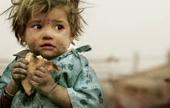

Hunger kills more people each year than AIDS, malaria and terrorism combined
A huge part of Indian population i.e. 190 million people (20 crore approx) sleep without food daily.India is home to the largest undernourished population in the world.India ranks 100th on that list in ensuring food security for its peoples, placing it in the high end of the “serious” category.
The challenge is not a lack of food - it is making food consistently available to everyone who needs it.
Hunger kills more people each year than AIDS, malaria and terrorism combined
Every 10 seconds, a child dies from hunger
82% of hungry people live in countries with food surpluses, not food shortages
40% of the food produced in India is wasted. About 21 million tonnes of wheat are wasted
Food wasted in India is more than the national output of countries such as Britain
Hunger kills more people each year than AIDS, malaria and terrorism combined
Many of us tend to waste food by taking lot of food in our plate. By campaigns and raising awareness through street play, we try to reach out to masses.
We are partnering with NGO's and also our robust team of volunteers is involved in door to door collection of raw grains by those who are willing.
We collaborate with local restaurant chains and have built a coupon/token system wherein anyone who is needy, with that coupon can avail a meal at the restaurant.